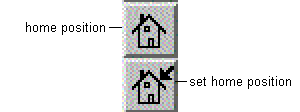

|  |
With Set Home Position you define the actual camera position and orientation as your 'home position', i. e. as your initial view.
With Home Position you come back
to this position.
If you did not set an explicit home position,
the default is the initial view when the Renderer window is opened.
Note:
| You can also use Home and Set Home in the Viewer Popup Menu (menu COVISE Renderer, option 'Functions', available by clicking with the right mouse button on the viewer area) |